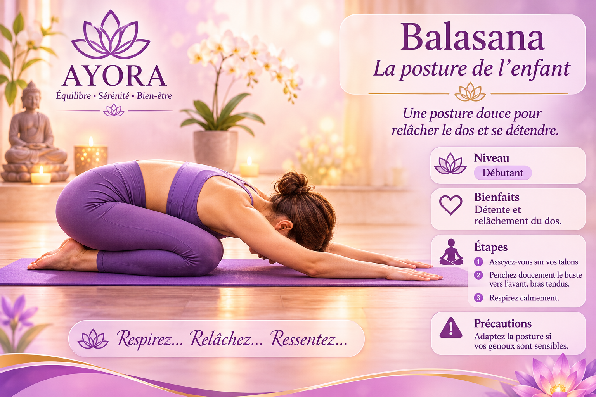

🧘
Postures de yoga
Découvrez les postures, leurs bienfaits et leurs adaptations.
DécouvrirAYORA · L'art de prendre soin de soi
Que vous débutiez ou que vous pratiquiez déjà le yoga, découvrez les ressources qui vous accompagneront au quotidien.
Découvrez les postures, leurs bienfaits et leurs adaptations.
DécouvrirExplorez différentes approches et trouvez celle qui vous correspond.
ExplorerAccordez-vous un moment de pratique à votre rythme.
DécouvrirAvancez progressivement avec des parcours de 7, 14 et 21 jours.
ExplorerUne bibliothèque pour apprendre à connaître les postures et enrichir votre pratique.

Balasana · Débutant
Une posture douce pour relâcher le dos et se détendre.
Vrksasana · Débutant
Développe l'équilibre et la concentration.
Adho Mukha Svanasana · Débutant
Étire le corps et renforce les bras et les jambes.
Bhujangasana · Débutant
Mobilise doucement la colonne vertébrale.
Baddha Konasana · Débutant
Favorise l'ouverture douce des hanches.
Virabhadrasana I · Intermédiaire
Développe la force et la stabilité.
Virabhadrasana II · Intermédiaire
Renforce les jambes et améliore l'ancrage.
Padmasana · Avancé
Une posture traditionnelle de méditation.
Paschimottanasana · Intermédiaire
Étire l'arrière des jambes et le dos.
Setu Bandhasana · Débutant
Renforce les fessiers et mobilise le bassin.
Eka Pada Rajakapotasana · Intermédiaire
Travaille la mobilité des hanches.
Savasana · Débutant
Favorise le repos et la relaxation.
Du yoga doux au yoga dynamique, chaque style répond à des besoins différents.
Découvrez prochainement les différentes pratiques.
Des séances pour vous accompagner dans votre quotidien.
Les séances guidées seront ajoutées prochainement.
Construisez votre régularité et progressez à votre rythme.
Pour découvrir ou reprendre le yoga en douceur.
Pour installer une nouvelle routine.
Pour approfondir votre pratique.